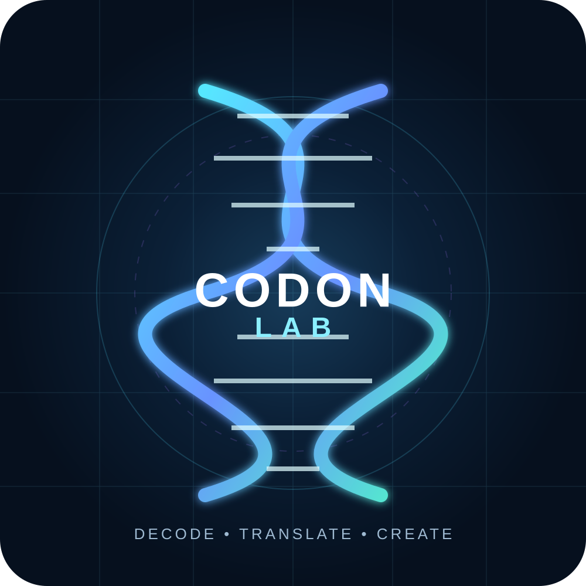
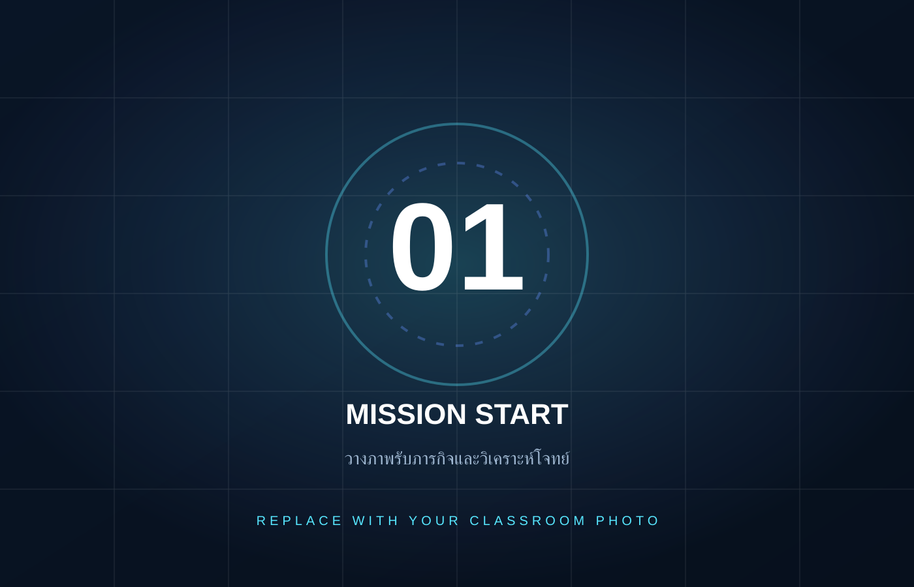
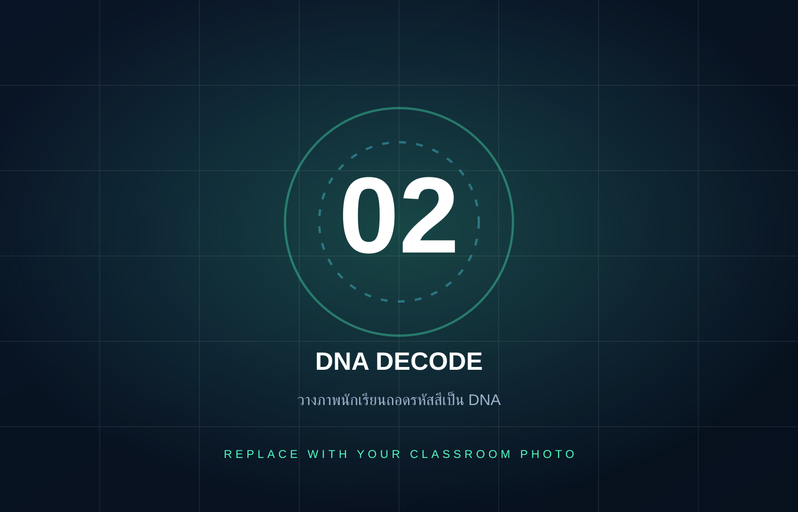
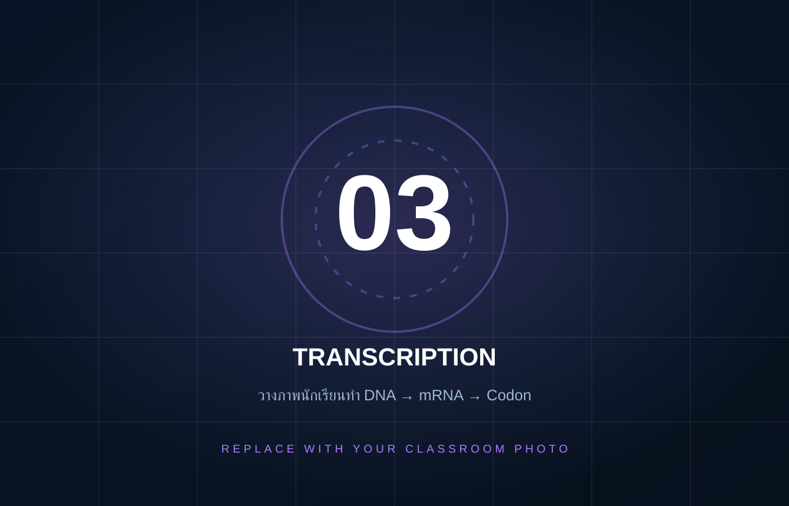
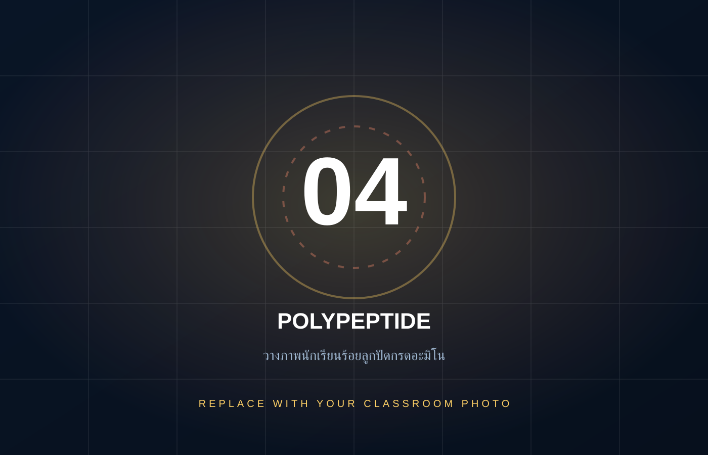
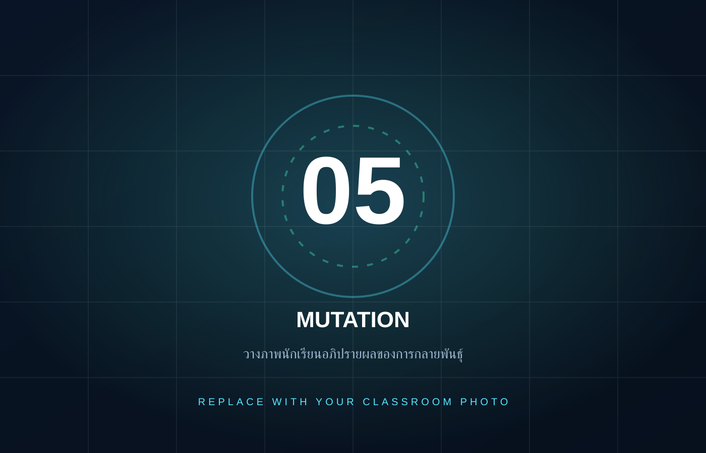
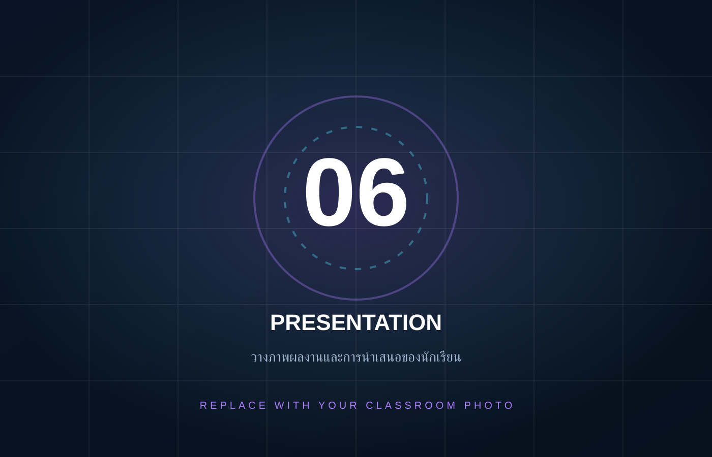

0
ผลสัมฤทธิ์ทางการเรียนเฉลี่ย
BIOLOGY LEARNING INNOVATION
เปลี่ยนบทเรียนเรื่องการสังเคราะห์โปรตีนจาก “เนื้อหานามธรรม” ให้เป็นประสบการณ์ที่ผู้เรียนมองเห็น จับต้อง และสร้างได้ด้วยตนเอง ผ่านกระบวนการ DNA → mRNA → Codon → Amino Acid → Protein

ผลสัมฤทธิ์ทางการเรียนเฉลี่ย
อธิบายขั้นตอนการสังเคราะห์โปรตีนได้
วงจรเรียนรู้จากรหัสพันธุกรรมสู่ชิ้นงาน
ผู้เรียนจำนวนหนึ่งเข้าใจคำศัพท์ DNA, RNA และโปรตีนแบบแยกส่วน แต่ยังเชื่อมโยงกระบวนการถอดรหัสและแปลรหัสเป็นภาพรวมได้ยาก
กระบวนการสังเคราะห์โปรตีนมีหลายขั้นตอนและเป็นแนวคิดเชิงนามธรรม ผู้เรียนจึงสับสนระหว่าง DNA, mRNA, codon และกรดอะมิโน
กิจกรรมที่ทำให้ลำดับข้อมูลทางพันธุกรรม “มองเห็นได้” และเปิดโอกาสให้ลงมือถอดรหัส แปลรหัส ทดลอง และตรวจสอบคำตอบด้วยตนเอง
ใช้สี รหัส ลูกปัด ภาพ Pixel และภารกิจเป็นสะพานเชื่อมจากสารพันธุกรรมไปสู่แบบจำลองสาย Polypeptide ที่ผู้เรียนสร้างจริง
นวัตกรรมถูกออกแบบให้ผู้เรียนเรียนรู้ผ่านลำดับการคิดที่ชัดเจน จากข้อมูลภาพไปสู่สารพันธุกรรมและผลิตภัณฑ์ของยีน
ใช้ระบบสีเป็นจุดเริ่มต้นให้ผู้เรียนอ่านข้อมูลและแปลงเป็นลำดับ DNA
ฝึกมองข้อมูลเป็นลำดับและตรวจสอบความถูกต้องในแต่ละขั้นตอน
สร้างสาย Polypeptide ด้วยลูกปัด ทำให้โปรตีนกลายเป็นสิ่งที่ผู้เรียนจับต้องได้
ใช้ผลจากการถอดรหัสและชิ้นงานเป็นหลักฐานในการอภิปราย Mutation และผลต่อโปรตีน
ทุกชิ้นมีหน้าที่ทางการเรียนรู้ ไม่ใช่เพียงอุปกรณ์ประกอบกิจกรรม
ตารางเชื่อมโยงสีกับรหัส DNA ใช้เริ่มภารกิจ Decode
INPUTช่วยตรวจสอบการจับคู่เบสและการถอดรหัสเป็น mRNA
TRANSCRIPTIONใช้แปล codon เป็นกรดอะมิโนและเรียนรู้ Start / Stop codon
TRANSLATIONลูกปัดสีแทนกรดอะมิโน ทำให้ลำดับโปรตีนมองเห็นได้จริง
MODELเชือกร้อยสำหรับประกอบลำดับกรดอะมิโนเป็นสาย Polypeptide
CREATEโจทย์ภาพ Pixel ที่ซ่อนข้อมูลพันธุกรรมไว้ให้ผู้เรียนแกะรหัส
MISSIONใบกิจกรรมสำหรับบันทึกหลักฐานการคิดและตรวจสอบแต่ละขั้นตอน
EVIDENCEใช้เปรียบเทียบการเปลี่ยนแปลงลำดับเบสและผลที่เกิดกับโปรตีน
EXTENSIONออกแบบเป็น Mission Flow ให้ผู้เรียนเดินทางจาก “นักถอดรหัส” ไปสู่ “นักสร้างโปรตีน”
สังเกตภาพ Pixel ระบุตำแหน่งและลำดับสีที่ปรากฏในโจทย์
เทียบสีกับตารางรหัส แล้วบันทึกลำดับเบส DNA อย่างเป็นระบบ
ใช้หลักการจับคู่เบสเพื่อจำลองกระบวนการ Transcription
แบ่ง mRNA ทีละ 3 เบส แล้วใช้ Codon Table ระบุกรดอะมิโน
ร้อยลูกปัดตามลำดับกรดอะมิโน และใช้ชิ้นงานอธิบายผลของ Mutation
คลิกที่ภาพเพื่อขยายเต็มจอ — เพียงแทนที่ไฟล์ในโฟลเดอร์ assets/activities ด้วยภาพจริงของคุณ






การประเมินเน้นทั้งผลสัมฤทธิ์ ความเข้าใจเชิงกระบวนการ และคุณภาพของการมีส่วนร่วมในการเรียนรู้
ผู้เรียนมีผลการเรียนรู้หลังใช้กิจกรรม CodonLab สูงกว่าเกณฑ์ที่กำหนด
ผู้เรียนสามารถเชื่อมโยงบทบาทของ DNA, RNA และขั้นตอนการสร้างโปรตีนได้อย่างเป็นระบบ
ผู้เรียนมองเห็น “ร่องรอยการคิด” ผ่านลำดับรหัสและชิ้นงานที่สร้าง
ลดการท่องจำ เพิ่มการลงมือทำและตรวจสอบคำตอบด้วยหลักฐาน
ชิ้นงาน Polypeptide ถูกใช้เป็นสื่อกลางในการอภิปรายเชิงเหตุผล
CodonLab ไม่ได้สอนเพียงว่า DNA สร้างโปรตีนอย่างไร แต่ทำให้ผู้เรียน เห็นความหมายของข้อมูลทางพันธุกรรม ผ่านการคิด การลงมือทำ และผลงานที่สร้างขึ้นด้วยตนเอง
เปลี่ยนชุด Pixel หรือ Mutation Scenario เพื่อสร้างโจทย์ใหม่ได้ต่อเนื่อง
ใช้วัสดุที่หาได้ง่ายและสามารถจัดเป็นชุดกิจกรรมรายกลุ่มได้
สามารถต่อยอดเป็น Pixel → DNA Generator หรือระบบสร้างโจทย์ออนไลน์
โรงเรียน / หน่วยงาน
พัฒนาสื่อ CodonLab เพื่อแก้ปัญหาการเรียนรู้เรื่องโครโมโซม สารพันธุกรรม และการสังเคราะห์โปรตีน โดยเน้นการเรียนรู้ผ่านการลงมือปฏิบัติจริง
CodonLab : ปฏิบัติการถอดรหัสสร้างชีวิต
กลับสู่ด้านบน ↑